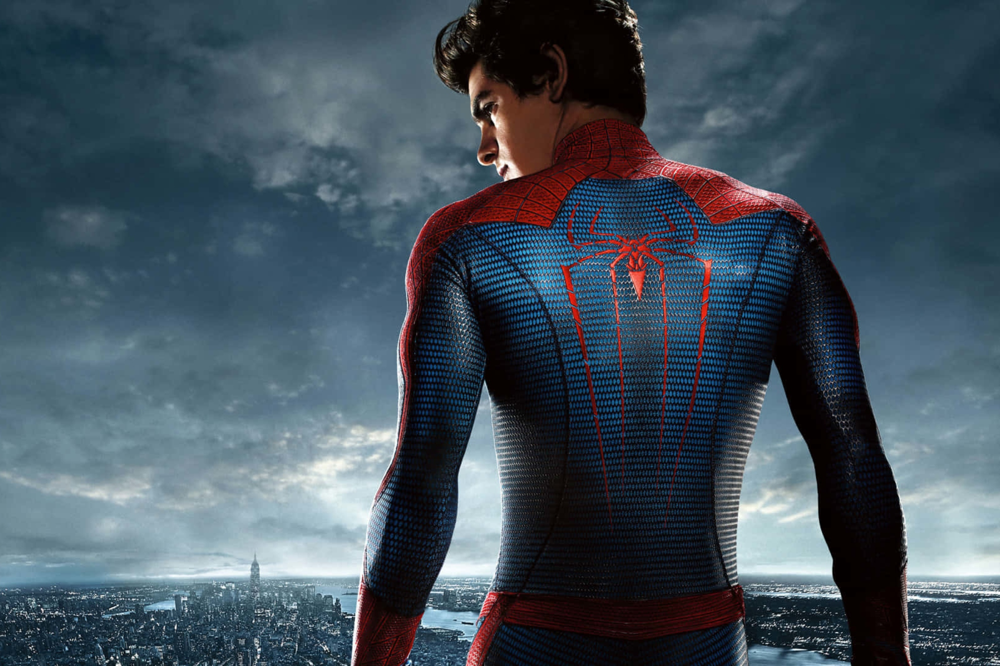

Spider-man de Andrew Garfield
¿Quien es?
Su interpretación presentó un Peter Parker más joven, sarcástico y dinámico. Destacó por mostrar una relación más cercana al cómic en cuanto al humor y la movilidad del personaje, además de una historia más centrada en la investigación sobre sus padres.
Primera aparicion
Debutó como Spider-Man en The Amazing Spider-Man de 2012
Descripcion
Su versión mostró un héroe más joven, rápido y sarcástico, con una personalidad más cercana a algunos cómics modernos.
Dato interesante
Su traje y movimientos fueron diseñados para parecer más ágiles y acrobáticos, destacando el estilo arácnido del personaje.